Espacios de trabajoWorkspaces
La global y uno por proyecto, cada uno con su historial, sus APIs y sus ajustes.The global one and one per project, each with its own history, APIs and settings.
Cómo funcionaHow it works
- 1. GlobalGlobalPara texto y archivos sueltos. Sus ajustes valen en los proyectos que no tienen los suyos.For loose text and files. Its settings apply to projects that do not have their own.
- 2. Lo que se heredaWhat is inheritedModelo, historial y presupuesto: lo que un proyecto no define lo toma de la global.Model, history and budget: what a project does not define comes from the global one.
- 3. Un proyectoA projectUna carpeta con .tramtai/: su propio historial, sus APIs y sus ajustes.A folder with .tramtai/: its own history, APIs and settings.
Paso a pasoStep by step
- Abre un proyecto desde el selector de arriba o desde Espacios. Si la carpeta no tenía .tramtai/, Tramtai la prepara y confía en ella.Open a project from the selector at the top or from Workspaces. If the folder had no .tramtai/, Tramtai prepares it and trusts it.
- Si ya traía .tramtai/ (un repositorio clonado), decide si confías: así su local.yaml puede usar ajustes de seguridad.If it already had .tramtai/ (a cloned repository), decide whether you trust it: then its local.yaml can use security settings.
- En Espacios ves todos, también los detenidos. Detén los que no uses y olvida los que ya no necesites.In Workspaces you see all of them, stopped ones too. Stop the ones you do not use and forget the ones you no longer need.
Qué verás en pantallaWhat you will see on screen
- Tus espaciosYour workspaces Aquí ves todos los espacios, también los detenidos: su estado, su carpeta, cuántas APIs y peticiones tienen y lo que puedes hacer con cada uno.Here you see all your workspaces, stopped ones too: their status, folder, how many APIs and requests they have and what you can do with each.
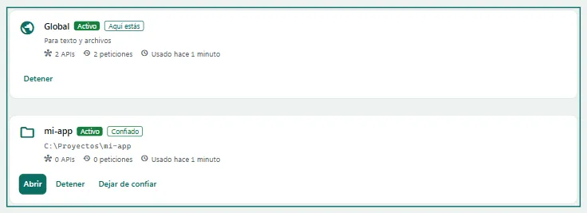
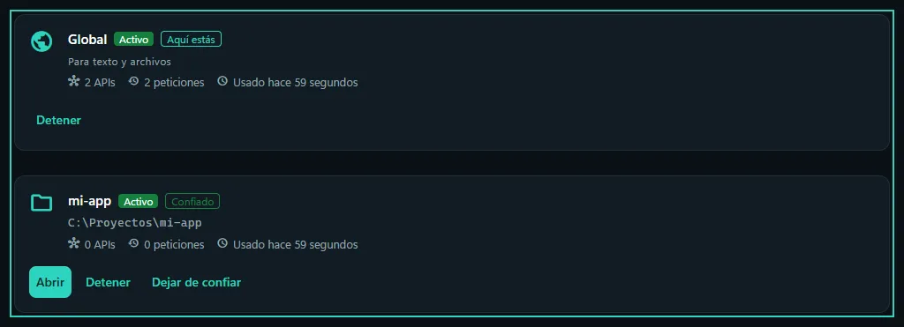
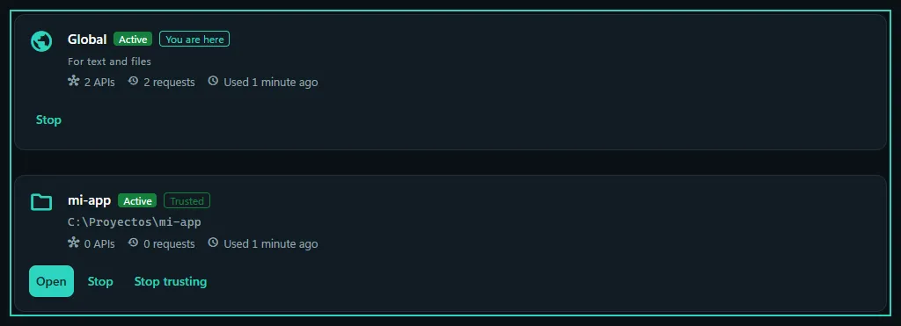
- Abrir un proyectoOpen a project Con este botón abres una carpeta como espacio de trabajo. Si no tenía .tramtai/, Tramtai la prepara por ti.This button opens a folder as a workspace. If it had no .tramtai/, Tramtai prepares it for you.
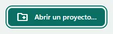
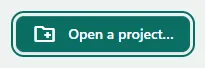
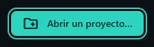
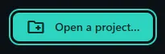
- Refrescar la listaRefresh the list Vuelve a cargar los espacios para ver al día el estado de cada uno.Reloads the workspaces so you see the current state of each one.
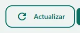
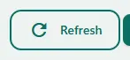
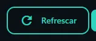
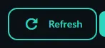
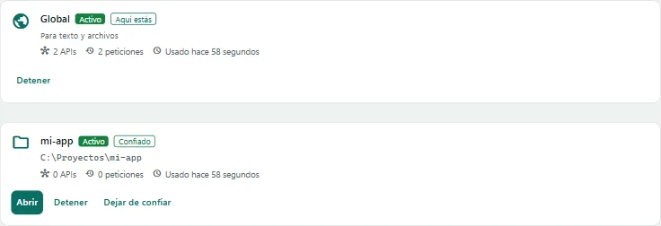
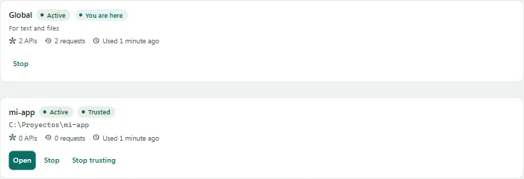
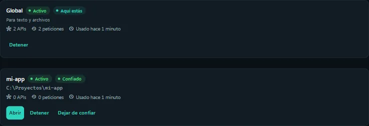
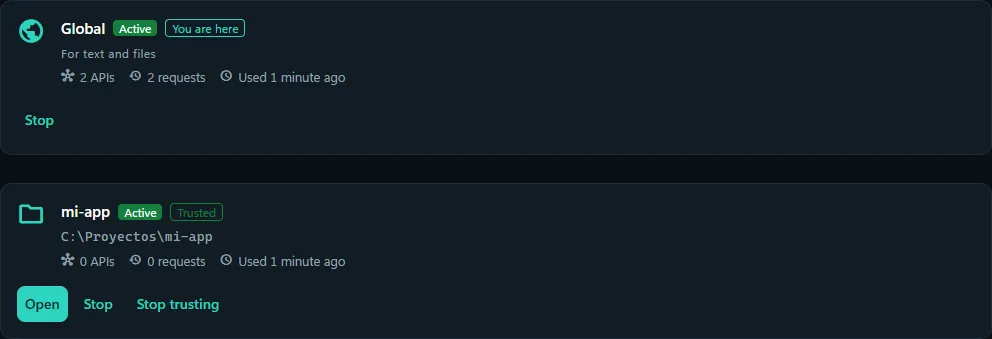
PreguntasQuestions
¿Qué significa confiar en una carpeta?What does trusting a folder mean?
Que su .tramtai/local.yaml puede usar ajustes de seguridad, como el programa de cada agente. La confianza se guarda en Tramtai, nunca en el repositorio.That its .tramtai/local.yaml can use security settings, such as each agent’s program. Trust is stored in Tramtai, never in the repository.
¿Puedo mover o renombrar un proyecto?Can I move or rename a project?
Sí. Su identificador queda en .tramtai/espacio: en la nueva ruta conserva historial, APIs y clave. Te vuelve a preguntar si confías, porque la confianza no viaja con la carpeta.Yes. Its id stays in .tramtai/espacio: at its new path it keeps its history, APIs and key. It asks again whether you trust it: trust does not travel with the folder.
¿Y si copio la carpeta?And if I copy the folder?
La copia es un espacio nuevo, con su propio historial y sin clave hasta que crees la suya; el original sigue como estaba.The copy is a new workspace, with its own history and no key until you create one; the original stays as it was.
¿Qué borra «Olvidar»?What does “Forget” delete?
Su historial, sus archivos subidos, su clave y las claves de sus APIs en Tramtai. La carpeta del proyecto, con su .tramtai/, no se toca.Its history, uploaded files, key and API keys in Tramtai. The project folder, with its .tramtai/, is not touched.
¿Por qué un espacio sale «No encontrado»?Why does a workspace show “Not found”?
Su carpeta se movió o se borró. «Buscar la carpeta» lo reasocia sin perder nada (después, «Confiar» si usa ajustes de seguridad); «Olvidar», si ya no lo necesitas.Its folder was moved or deleted. “Locate the folder” links it again without losing anything (then “Trust” if it uses security settings); “Forget” if you no longer need it.
¿Cómo sé si un ajuste es del proyecto o de la global?How do I know whether a setting is the project’s or the global one?
En Ajustes, cada uno dice «Propio» o «De Global». Los propios tienen «Volver al de Global», que quita el valor del local.yaml del proyecto.In Settings each one says “Own” or “From Global”. Own ones have “Back to Global”, which removes the value from the project’s local.yaml.
¿Y desde la terminal?And from the terminal?
«tramtai espacios» los lista; «tramtai espacio iniciar», «detener» y «olvidar» hacen lo mismo que la página.“tramtai espacios” lists them; “tramtai espacio iniciar”, “detener” and “olvidar” do the same as the page.
Si algo fallaIf something fails
- Hay que decidir si confías en esa carpetaYou need to decide whether you trust that folder
confianza_requerida - La carpeta ya tenía configuración de Tramtai. Decide si confías en ella: si no, se abre sin sus APIs ni su presupuesto.The folder already had a Tramtai configuration. Decide whether you trust it: if not, it opens without its APIs or budget.
- El espacio de este proyecto está detenidoThis project’s workspace is stopped
espacio_detenido - Estás dentro de un proyecto detenido. Actívalo con tramtai espacio iniciar, o usa --global para mandar a la global.You are inside a stopped project. Start it with tramtai espacio iniciar, or use --global to send to the global one.
En la terminal: 6 abre Espacios y Ctrl+E cambia de espacio desde cualquier página. n abre un proyecto; el pie dice qué tecla activa, detiene u olvida el elegido.In the terminal: 6 opens Workspaces and Ctrl+E switches workspace from any page. n opens a project; the footer shows which key starts, stops or forgets the selected one.